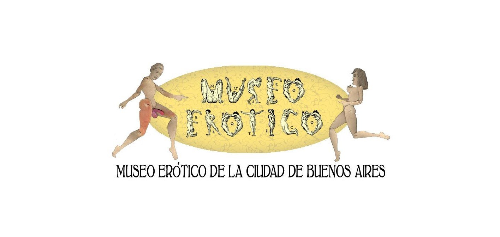
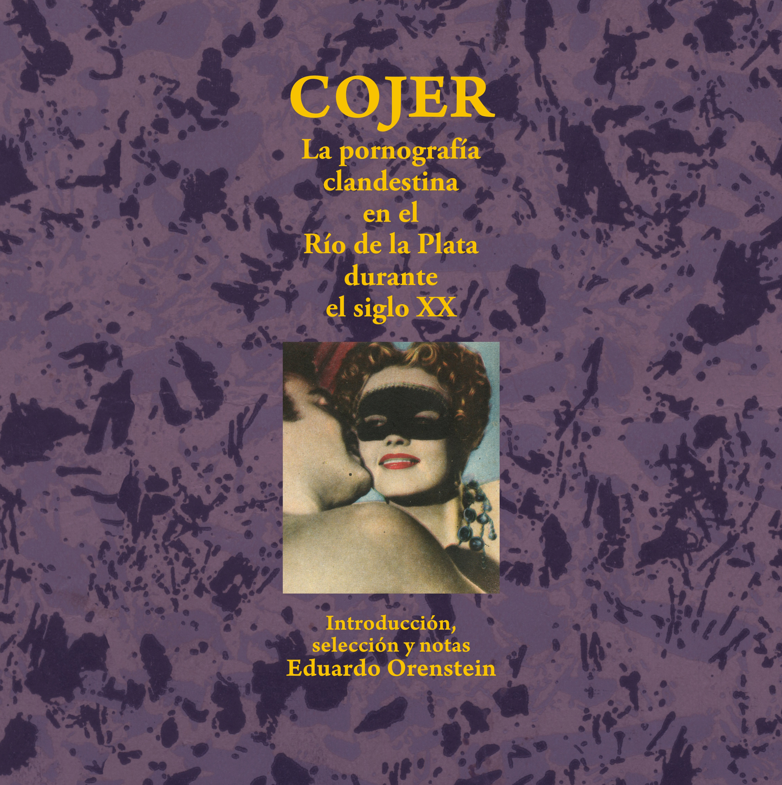
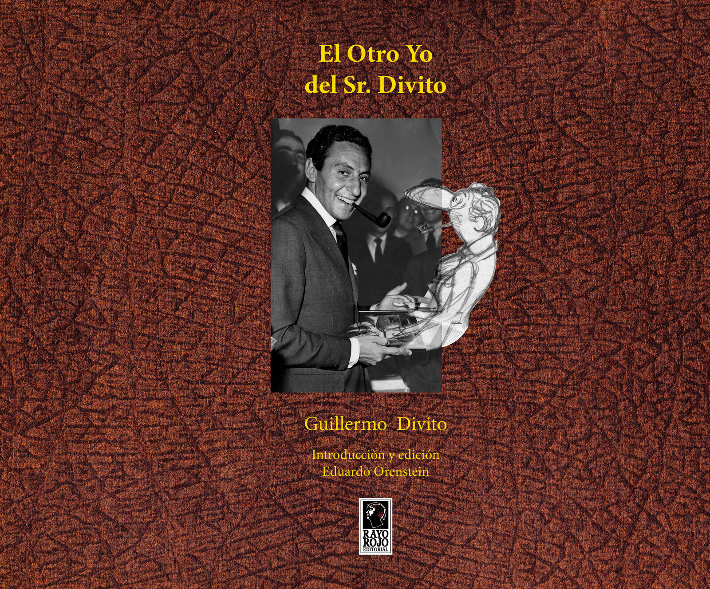
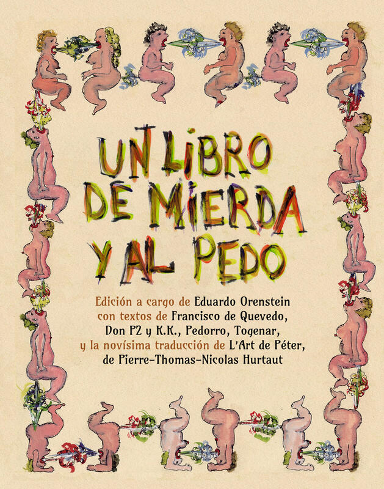

Museo Erótico

El Museo Erótico de la Ciudad de Buenos Aires es un archivo que reúne documentos, objetos y publicaciones que son testimonio de las costumbres y cultura relativas a lo sexual en el Río de la Plata. Un aspecto ausente en los ámbitos oficiales, museos o instituciones, algo de lo que poco se habla fuera del chiste fácil o moda circunstancial, y mucho menos se estudia.
El Museo Erótico de la Ciudad de Buenos Aires y estos libros monográficos con temas de su colección, trata de instalar la discusión sobre estos asuntos y saldar una deuda con la cultura nacional.

N.° 1
Cojer — La pornografía clandestina en el Río de la Plata
La palabra "cojer" no existe. En el diccionario aparece "coger" y, en su 31ª acepción, como vulgarismo, dice que es "realizar el acto sexual". En el Río de la…

N.° 2
El Otro Yo del Sr. Divito
Guillermo Divito (1914-1969) fue mucho más que un gran dibujante. Desde las páginas de "Rico Tipo" hizo desfilar una legión de personajes arquetípicos de la…

N.° 3
Un Libro de Mierda y al Pedo
Y sí, este es un libro que trata de la mierda y de los pedos. O de los pedos y de la mierda, depende quién salga antes. El tema es maldito, aunque los…